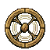
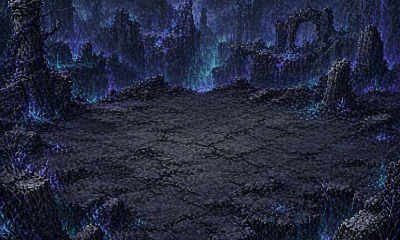

게임 파일을 받는 중…
저장된 모험이 없습니다. 게스트로 바로 시작하거나, 로그인하면 여러 기기에서 이어서 할 수 있습니다.
이 게임을 다른 탭에서 열어 이 탭은 멈췄습니다.
직업을 눌러 기초 스킬과 전직을 확인하세요.
장비를 정리한 뒤 다음 여정을 시작할 수 있습니다.

1차 전직 시련을 통과했습니다. 이 직업의 전직 셋 가운데 하나를 고르세요.한 번 고르면 이번 루프에는 바꿀 수 없습니다.
정리 기준
장비 분석
등급
칸
일괄 해체
우선 보관과 습득 조건은 설정의 아이템 필터에서 고릅니다. 아이템 필터 열기

현재 빌드의 고스트를 등록하고 다른 플레이어와 대결합니다.
기본 전술을 정하고, 상황에 따라 바꿀 행동을 아래에 추가하세요. 대상과 거리 규칙은 각각 위에서 먼저 맞는 규칙을 따릅니다.
바꾸면 바로 적용되고 저장됩니다.
외형은 능력치에 영향을 주지 않습니다.
PC와 모바일 배치를 따로 저장합니다.
칸을 누른 뒤 새 키를 누르세요. Esc는 고정입니다.
게스트 저장은 이 기기에만 있습니다. 로그인과 회원가입은 시작 화면에서 합니다.